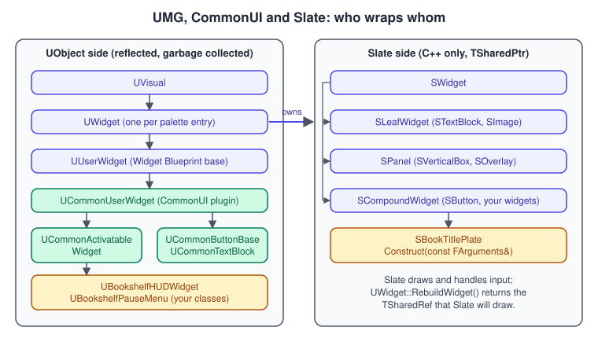
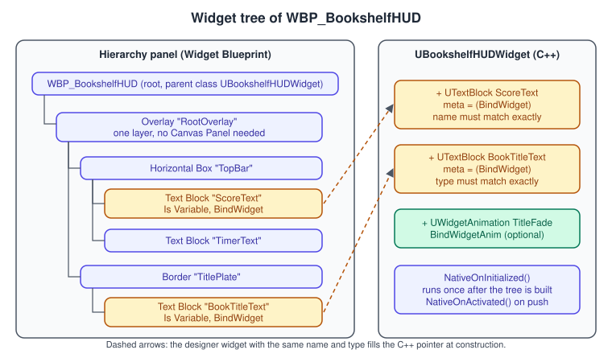
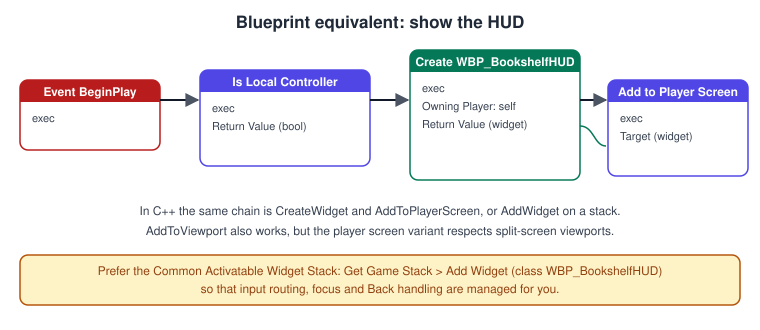
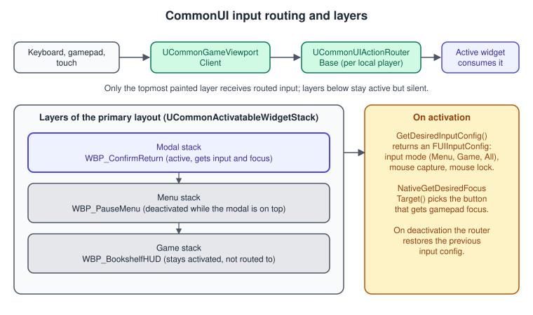
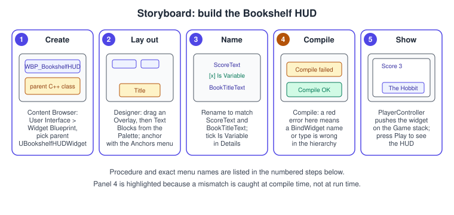

UMG, Slate and CommonUI
|
This content was generated with the assistance of AI and should be verified against the official documentation before being relied on in production. |
Every game needs a way to show the player what is going on and to let the player choose something: a score, the title of the
book in your hands, a pause menu, a settings screen. Unreal Engine builds all of this on one stack of three layers. Slate
is the C++ widget toolkit that draws everything, including the editor itself. UMG (the Unreal Motion Graphics UI Designer)
wraps Slate in reflected UObject classes and adds the visual Widget Blueprint editor. CommonUI is a plugin on top of UMG
that adds what a shipped game needs: input routing for mouse, gamepad and touch, a stack of screens with back handling, and
buttons that know which key triggers them on which platform. A fourth piece, the UMG Viewmodel plugin, separates the data a
screen shows from the widgets that show it.
The facts on this page were checked in November 2026 against the Unreal Engine 5.8 documentation (5.8 was released on
2026-06-17; the latest hotfix found is 5.8.4). The material applies to every platform Unreal builds for. CommonUI and the
UMG Viewmodel are plugins that you enable per project. The running example is the Bookshelf project (Third Person template,
module Bookshelf, API macro BOOKSHELF_API): WBP_BookshelfHUD, built over the C++ class UBookshelfHUDWidget, shows the
score and the title of the held book, and a CommonUI pause menu stacks on top of it. The input side is covered in
Enhanced Input, the player classes that own the UI in
Gameplay Framework, and the engine-neutral idea of UI as a retained
scene in Scene Graphs and Asset Formats. Unity readers will find the counterparts in
uGUI and TextMeshPro and UI Toolkit.
The three layers: Slate, UMG and CommonUI

Slate is a platform-agnostic, declarative C++ UI framework. A Slate widget (SWidget) is not a UObject: it is a plain C++
class held by TSharedPtr and TSharedRef, it is not visible to reflection, to Blueprints or to garbage collection, and
it is created with the SNew and SAssignNew macros. Slate has three kinds of widget. A leaf widget has no child slots
(STextBlock, SImage). A panel has a variable number of child slots (SVerticalBox, SOverlay). A compound widget has a
fixed set of named slots (SButton has one, Content). Slate lays out in two passes: a bottom-up pass computes each widget’s
desired size (ComputeDesiredSize), then a top-down pass arranges every widget inside the space it was given
(ArrangeChildren). Painting (OnPaint) rebuilds the list of draw elements each frame unless caching, described below,
reuses it.
UMG gives each Slate widget a UObject counterpart. A UWidget (a Text Block, a Button, a Vertical Box) owns a Slate widget
and creates it when needed through RebuildWidget, which returns a TSharedRef<SWidget>. A UUserWidget is a
composed widget: it holds a tree of UWidget objects, which is exactly what a Widget Blueprint edits. Because every UMG widget is
reflected, Blueprints can call it, properties can be bound to it, and the garbage collector keeps it alive. Palette entries,
the Designer and the Hierarchy panel all work on UWidget classes.
CommonUI adds UCommonUserWidget, which derives from UUserWidget and adds action bindings and pointer-input handling, and the
subclasses UCommonActivatableWidget (a screen that can be activated and deactivated), UCommonButtonBase (a button with
an input action) and UCommonTextBlock (text driven by styles). CommonUI is where gamepad focus, platform-specific
button glyphs and the stack of menus live.
| Layer | Use it for | Avoid it for |
|---|---|---|
Slate ( |
Editor tools, custom primitives that UMG does not offer, widgets that draw their own geometry, very hot UI paths. |
Gameplay screens that designers should lay out and iterate on; there is no visual editor for it. |
UMG ( |
HUDs, menus, inventory screens, anything designers lay out visually and Blueprints script. |
Cross-platform screens with gamepad navigation and platform glyphs, unless combined with CommonUI. |
CommonUI ( |
Menus that must work on mouse, keyboard, gamepad and touch; stacks of screens with Back handling; platform button glyphs. |
A single persistent score label on a desktop-only game, where it adds setup for little gain. |
Widget Blueprints and the UI Designer
A Widget Blueprint is created in the Content Browser with Add > User Interface > Widget Blueprint (or by right-clicking in the Content Browser). Double-clicking it opens the Widget Blueprint Editor, which has two modes selected with the Editor Mode switch in the toolbar: Designer, the default, for layout, and Graph for the Blueprint event graph, functions and variables. The toolbar offers Compile, Save, Browse and Play.
-
Palette lists every class that inherits from
UWidget: you drag entries into the Visual Designer or onto the Hierarchy. -
Hierarchy shows the structure of the user widget as a tree. Select, rename, reorder and re-parent widgets here.
-
Visual Designer shows the layout, at 1:1 scale by default; hold Ctrl and use the mouse wheel to zoom.
-
Details shows the properties of the selected widget, including Is Variable, which exposes the widget as a variable that the Graph and, with
BindWidget, C++ can reach. -
Animations is a track editor that keyframes widget properties (see Animation, visibility and text).

Panels and sizing
Layout widgets (panels) decide where children go; the choice is both a design and a performance decision.
| Widget | What it does |
|---|---|
Canvas Panel |
Free placement with anchors, position and size. Each child has an anchor point on the canvas, which is how a layout keeps its relative position when the screen changes shape. Use it once, at the root of a HUD or menu, never for individual labels or buttons. |
Overlay |
Stacks children on top of each other, each with its own alignment and padding. A good root for a HUD. |
Horizontal Box, Vertical Box |
Lay children out in a row or a column. Each slot is sized Auto (to its content) or Fill (a share of the remaining space). |
Grid Panel, Uniform Grid Panel, Wrap Box |
Rows and columns with spans, equal cells, or items that wrap when a row is full. |
Size Box |
Forces a width, height or constraints on one child. It needs several layout passes, so use a Spacer for plain fixed sizes. |
Scale Box |
Scales one child to fit the available space. |
Border |
One child inside a brush, with padding; the usual way to draw a panel background. |
Scroll Box |
Scrolls children that do not fit; it creates all of its children, so prefer a list view (below) for long lists. |
Safe Zone |
Insets content to the safe area of the display, for televisions and phones with notches. |
Two settings keep a layout stable across resolutions. Author every widget against one Design Time Size (target resolution) and at a DPI scale of 1.0, then let the project’s DPI curve (Project Settings > Engine > User Interface > DPI Scaling) scale it. For permanent scaling, wrap the widget in a Scale Box rather than using a render transform, because render transforms are not part of layout and may not scale correctly across resolutions; use render transforms for temporary effects such as animation. When preparing art, minimise padding baked into textures and use UMG padding instead, and use the Border or Image brush Draw As modes (Box, Border, Image) so that one small texture can stretch or tile.
Source: Widget Blueprints in UMG and UMG Best Practices
Showing a widget
A Widget Blueprint is a class; to see it you create an instance with Create Widget (class, owning player controller) and put it on screen with Add to Viewport (or Add to Player Screen, which respects the owning player’s viewport in split-screen). Keep the return value of Create Widget in a variable so the same widget can be reused, hidden or removed later with Remove from Parent. To nest one widget inside another, use Add Child on the parent instead of Add to Viewport. Three nodes choose where player input goes:
-
Set Input Mode Game Only: input goes to the game, UI ignores it. Fit for non-interactive displays such as a score.
-
Set Input Mode UI Only: only the UI receives input and game controls are disabled. Use it sparingly.
-
Set Input Mode Game And UI: both; the player can click buttons while moving.
Together with Set Show Mouse Cursor, these are the Blueprint way to switch a screen between gameplay and menu input. CommonUI replaces this manual bookkeeping with input configs, described below.

Source: Creating Widgets
Binding C++ to the widget tree
The standard way to write the logic of a screen in C++ is to derive a class from UUserWidget (or one of its CommonUI
subclasses), declare the widgets it needs as properties marked meta = (BindWidget), and create a Widget Blueprint whose parent class is the
C++ class. When the Widget Blueprint is compiled the editor checks that the hierarchy contains a widget of the same name and
type for every BindWidget property, and fails the compile if it does not. BindWidgetOptional makes the binding optional (the
pointer stays null when the designer omits the widget), and BindWidgetAnim and BindWidgetAnimOptional do the same for
UWidgetAnimation properties, which must be Transient. This keeps layout in the Designer, where designers work, and logic in
C++, where programmers work. The design rules from C++ and Blueprints Together apply:
the C++ class is the contract, the Blueprint fills it in.
Three hooks matter. NativeOnInitialized runs once when the widget instance is created and its tree has been built; use it
to subscribe to delegates and set up state that lives as long as the widget. NativePreConstruct also runs in the Designer, so
it is the place for code that makes the preview look right. NativeConstruct runs each time the widget is added to the
screen. NativeDestruct is its counterpart; unsubscribe there if you subscribed in NativeConstruct. For a
UCommonActivatableWidget, the activation hooks NativeOnActivated and NativeOnDeactivated are usually better places to
start and stop work, because they follow the widget being on top of a stack.
The HUD below derives from UCommonActivatableWidget, so it can live on the Game stack of the primary layout built later in
this page.
// BookshelfHUDWidget.h
#pragma once
#include "CoreMinimal.h"
#include "CommonActivatableWidget.h"
#include "BookshelfHUDWidget.generated.h"
class ABookshelfPlayerController;
class UTextBlock;
class UWidgetAnimation;
/**
* The in-game HUD: shows the score and the title of the held book.
* WBP_BookshelfHUD is a Widget Blueprint whose parent class is this class.
*/
UCLASS(Abstract)
class BOOKSHELF_API UBookshelfHUDWidget : public UCommonActivatableWidget
{
GENERATED_BODY()
public:
/** Sets the score text. Call it from the code that owns the score. */
UFUNCTION(BlueprintCallable, Category = "Bookshelf|HUD")
void SetScore(int32 NewScore);
/** Sets the title of the held book; an empty text hides the title plate. */
UFUNCTION(BlueprintCallable, Category = "Bookshelf|HUD")
void SetBookTitle(const FText& NewTitle);
/** Start of the viewmodel's Property Path: GetBookshelfPlayerController.HUDViewModel */
UFUNCTION(BlueprintPure, Category = "Bookshelf|HUD")
ABookshelfPlayerController* GetBookshelfPlayerController() const;
protected:
virtual void NativeOnInitialized() override;
virtual TOptional<FUIInputConfig> GetDesiredInputConfig() const override;
/** Blueprint hook for extra effects when the title changes. */
UFUNCTION(BlueprintImplementableEvent, Category = "Bookshelf|HUD")
void OnBookTitleChanged(const FText& NewTitle);
/** Must exist in the Widget Blueprint with this name and type. */
UPROPERTY(BlueprintReadOnly, meta = (BindWidget))
TObjectPtr<UTextBlock> ScoreText;
UPROPERTY(BlueprintReadOnly, meta = (BindWidget))
TObjectPtr<UTextBlock> BookTitleText;
/** Optional fade animation; the HUD still works when the designer omits it. */
UPROPERTY(Transient, meta = (BindWidgetAnimOptional))
TObjectPtr<UWidgetAnimation> TitleFade;
};// BookshelfHUDWidget.cpp
#include "BookshelfHUDWidget.h"
#include "Animation/WidgetAnimation.h"
#include "BookshelfPlayerController.h"
#include "Components/TextBlock.h"
#include "Input/UIActionBindingHandle.h"
#define LOCTEXT_NAMESPACE "BookshelfHUD"
void UBookshelfHUDWidget::NativeOnInitialized()
{
Super::NativeOnInitialized();
// The BindWidget pointers are valid from here on.
SetScore(0);
SetBookTitle(FText::GetEmpty());
}
TOptional<FUIInputConfig> UBookshelfHUDWidget::GetDesiredInputConfig() const
{
// The HUD is only a display: input goes to the game, the mouse stays captured.
return FUIInputConfig(ECommonInputMode::Game, EMouseCaptureMode::CapturePermanently, false);
}
void UBookshelfHUDWidget::SetScore(int32 NewScore)
{
// FText::Format keeps the sentence translatable: translators can reorder the argument.
ScoreText->SetText(FText::Format(LOCTEXT("ScoreFormat", "Books shelved: {0}"), FText::AsNumber(NewScore)));
}
void UBookshelfHUDWidget::SetBookTitle(const FText& NewTitle)
{
BookTitleText->SetText(NewTitle);
BookTitleText->SetVisibility(NewTitle.IsEmpty() ? ESlateVisibility::Collapsed : ESlateVisibility::HitTestInvisible);
if (!NewTitle.IsEmpty() && TitleFade)
{
PlayAnimation(TitleFade);
}
OnBookTitleChanged(NewTitle);
}
ABookshelfPlayerController* UBookshelfHUDWidget::GetBookshelfPlayerController() const
{
return GetOwningPlayer<ABookshelfPlayerController>();
}
#undef LOCTEXT_NAMESPACESource: UCommonActivatableWidget API, FUIInputConfig API and UWidget API
Updating the UI: events, property bindings and Tick
A screen has to show data that changes. There are three ways to keep it current, and the choice decides the cost.
-
Events. The owner of the data tells the widget when it changes (
SetScoreabove, or an event dispatcher or delegate). The widget does work only when something happens. Epic’s guidance is to prefer events over bindings or Tick whenever possible. -
Property bindings (the Bind dropdown next to a property in Details, which creates a function). The bound function is polled every frame, even when the value has not changed. Fine for a prototype or a handful of cheap values; the Optimization Guidelines advise avoiding raw attribute binding in production screens.
-
Tick and Paint.
NativeTickandOnPaintrun every frame for every widget that uses them. Avoid them for UI logic.
The fourth way, an MVVM view binding, gives the convenience of bindings with the cost profile of events, and is described next.
Source: Optimization Guidelines for UMG
The UMG Viewmodel (MVVM) plugin
The UMG Viewmodel plugin (module ModelViewViewModel) implements the model-view-viewmodel pattern for UMG. A viewmodel is a UObject
that holds exactly the values a screen needs, in the shape the screen needs them, and announces when they change. The widget
(the view) does not call game code and game code does not know the widget: a view binding connects a viewmodel field to a widget
property, and the engine updates the widget when the field notifies. Designers and programmers can work separately, and
bindings update only when values change. The documentation page describes the plugin as a Beta feature to use with caution when
shipping, so check its status before you commit a production UI to it.
Enabling it. Turn on the UMG Viewmodel plugin in the Plugins window and restart; without it UMVVMViewModelBase and the View
Bindings panel are not available.
Writing a viewmodel in C++. Derive from UMVVMViewModelBase (which implements INotifyFieldValueChanged) or implement the
interface yourself. A field is a UPROPERTY with the FieldNotify specifier, optionally with Getter and Setter (or
Getter="Name" and Setter="Name" for custom function names); keep the backing variable protected or private so that
all changes go through the setter. A derived value is a UFUNCTION(BlueprintPure, FieldNotify) function that is const,
takes no arguments and returns one value. Unlike Blueprint viewmodels, C++ viewmodels must broadcast their changes
themselves, with two macros: UE_MVVM_BROADCAST_FIELD_VALUE_CHANGED(Name) broadcasts for a variable or a function name, and
UE_MVVM_SET_PROPERTY_VALUE(Name, Value) assigns a value, broadcasting only when it actually changed. A field without FieldNotify
can only be bound in One Time mode.
// BookshelfHUDViewModel.h
#pragma once
#include "CoreMinimal.h"
#include "MVVMViewModelBase.h"
#include "BookshelfHUDViewModel.generated.h"
/** The data the HUD shows. A view binding connects each field to a widget property. */
UCLASS(BlueprintType)
class BOOKSHELF_API UBookshelfHUDViewModel : public UMVVMViewModelBase
{
GENERATED_BODY()
public:
int32 GetScore() const { return Score; }
void SetScore(int32 NewScore);
const FText& GetHeldBookTitle() const { return HeldBookTitle; }
void SetHeldBookTitle(const FText& NewTitle);
/** Derived field: formatted for display, rebroadcast whenever Score changes. */
UFUNCTION(BlueprintPure, FieldNotify, Category = "Bookshelf|HUD")
FText GetScoreText() const;
/** Derived field: true while a book is in the player's hands. */
UFUNCTION(BlueprintPure, FieldNotify, Category = "Bookshelf|HUD")
bool IsHoldingBook() const;
private:
UPROPERTY(BlueprintReadOnly, FieldNotify, Getter, Setter, meta = (AllowPrivateAccess = "true"))
int32 Score = 0;
UPROPERTY(BlueprintReadOnly, FieldNotify, Getter, Setter, meta = (AllowPrivateAccess = "true"))
FText HeldBookTitle;
};// BookshelfHUDViewModel.cpp
#include "BookshelfHUDViewModel.h"
#define LOCTEXT_NAMESPACE "BookshelfHUDViewModel"
void UBookshelfHUDViewModel::SetScore(int32 NewScore)
{
// Assigns and broadcasts Score only when the value differs from the current one.
if (UE_MVVM_SET_PROPERTY_VALUE(Score, NewScore))
{
// The formatted text depends on Score, so announce it too.
UE_MVVM_BROADCAST_FIELD_VALUE_CHANGED(GetScoreText);
}
}
void UBookshelfHUDViewModel::SetHeldBookTitle(const FText& NewTitle)
{
if (UE_MVVM_SET_PROPERTY_VALUE(HeldBookTitle, NewTitle))
{
UE_MVVM_BROADCAST_FIELD_VALUE_CHANGED(IsHoldingBook);
}
}
FText UBookshelfHUDViewModel::GetScoreText() const
{
return FText::Format(LOCTEXT("ScoreFormat", "Books shelved: {0}"), FText::AsNumber(Score));
}
bool UBookshelfHUDViewModel::IsHoldingBook() const
{
return !HeldBookTitle.IsEmpty();
}
#undef LOCTEXT_NAMESPACESource: UMG Viewmodel and UMVVMViewModelBase API
Using it from a widget. In the Widget Blueprint Editor, open Window > Viewmodels and add the viewmodel class. Each entry has a creation type that says where the instance comes from:
| Creation type | Meaning |
|---|---|
Create Instance |
The widget creates its own viewmodel; each widget copy has its own data. |
Manual |
The reference starts null and your code assigns it, for example when creating the widget. |
Property Path |
The widget resolves the viewmodel through a dot-separated path that starts at the widget itself (a function or property chain such as |
Global Viewmodel Collection |
The viewmodel lives in the MVVM game subsystem, added with Add Viewmodel Instance (typically from the Game Instance). The global identifier must match the viewmodel class name. |
In the View Bindings panel you then bind a viewmodel field to a widget property and choose the binding mode:
One Time to Widget copies the value once, One Way to Widget updates the widget whenever the viewmodel notifies, One Way to Viewmodel
pushes widget changes (for example a text box) into the viewmodel, and Two Way does both. Bindings execute between
PreConstruct and Construct. A conversion function transforms a value on the way, such as turning an integer into text; it
takes one input and returns one output, and a global conversion function must be static, while one defined on the user widget must be pure and const. Because
arrays are not exposed directly, write FieldNotify add, remove and get functions for collections, and notify about element
additions, removals and moves for list views to follow them.
For the Bookshelf the viewmodel is held by the player controller, and the widget uses a Property Path that goes through a
small UFUNCTION on the HUD widget. The controller (below) forwards score changes from the game state to the viewmodel; the
game state from Gameplay Framework calls the controller’s
NotifyScoreChanged from its OnRep_Score. Networking and Replication
explains why a replicated value is shown by reacting to its notification, not by polling it.
Lists: ListView, TileView and TreeView
A ListView is virtualised: it creates entry widgets only for the rows that are visible. A list of 200 items with 5 rows visible
creates 5 entry widgets and recycles them as the list scrolls. The list is fed objects (UObject items, for example a
UBookDataAsset), and its Entry Widget Class is a user widget that implements the IUserObjectListEntry interface (header
Blueprint/IUserObjectListEntry.h), which adds an event for the item the list assigns to the entry. A TileView derives from ListView and shows uniformly sized tiles. A TreeView also derives
from ListView and shows a hierarchy, with the children of an item supplied by a function (OnGetChildrenInternal) or by the Get Item Children event in Blueprint. Use a list view
instead of a Scroll Box whenever there are more than a few dozen items, such as a shelf catalogue of all books. Entry widgets are recycled, so an entry must
reset its whole state each time an item is assigned, otherwise a selected highlight or a loaded image from the previous item
leaks onto the next one.
Source: UUserObjectListEntry API and UTreeView API
Animation, visibility and text
Widget animations are keyframed in the Animations panel of the Designer and played with Play Animation (PlayAnimation in
C++, which takes the UWidgetAnimation of a BindWidgetAnim property). Epic ranks animation by cost, cheapest first:
material-only animations cost the CPU nothing because the GPU runs them; animations scripted in Blueprint are cheap; Sequencer-based
UMG animations are expensive; animations that change layout are the most expensive. A colour change only repaints a widget, while a render
transform change invalidates layout every frame it animates. For short, frequent effects such as score pop-ups, prefer a
Blueprint tween to a Sequencer animation.
Visibility is an ESlateVisibility value set per widget. Visible draws and takes input; Collapsed is not drawn and takes no
layout space; Hidden is not drawn but keeps its layout space; HitTestInvisible draws but neither it nor its children receive
input; SelfHitTestInvisible draws and lets the children receive input. Children of a widget are constructed whether or not they
are visible, so a hidden complex widget still costs memory and load time.
Text in UI is FText, not FString: it carries localisation keys and formats numbers and dates for the player’s culture. Create it with
LOCTEXT inside a LOCTEXT_NAMESPACE or with NSLOCTEXT, and format it with FText::Format so that translators can reorder
arguments, as SetScore above does. Hard-coding FString concatenations in a HUD makes the screen impossible to translate.
CommonUI
Common UI is a plugin (enable CommonUI in the Plugins window) with the building blocks of a screen-based game UI that works for mouse and keyboard, gamepad and touch. Its input pages describe it in terms of three ideas: input routing, input configs and activatable widgets.
Setup
-
Viewport. Set Project Settings > Engine > General Settings > Game Viewport Client Class to
CommonGameViewportClient(or a class derived from it). Routing starts in the viewport client and does not work without it. -
Default navigation actions. Create a Blueprint class based on
CommonUIInputDatathat references a data table defining the default Click and Back actions, then assign it in Project Settings > Game > Common Input Settings > Input Data. -
Platform data. Create Blueprint classes based on
CommonInputBaseControllerData(input type, gamepad name, brush data maps and key sets that map keys to glyphs) and add each to the Controller Data array for its platform under Common Input Settings > Platform Input. The default gamepad name must match a controller data asset’s gamepad name exactly, or its icons do not appear. -
Input action data table. Create a Data Table with the row structure
CommonInputActionDataBase, with a display name, keyboard, gamepad and touch input type info, and gamepad overrides per controller. A button’s Triggering Input Action points at a row. Group related actions in separate tables and reference them from a composite table to reduce version-control conflicts. -
Styles. Create Blueprint classes from the Common Style classes (text, button, border) and assign defaults under Project Settings > Plugins > Common UI Editor > Template Styles.
Source: Common UI Quickstart Guide
Activatable widgets and stacks
An activatable widget (UCommonActivatableWidget) is a screen that can be activated and deactivated without being destroyed.
It is not activated automatically on construction. It provides ActivateWidget and DeactivateWidget, the events
NativeOnActivated and NativeOnDeactivated (and Blueprint events), and three virtual functions that give it behaviour:
-
GetDesiredInputConfigreturns anFUIInputConfig(input mode Menu, Game or All, mouse capture mode, mouse lock mode, whether to hide the cursor while the viewport captures) that the router applies when the widget is active and can receive input. When the widget deactivates, CommonUI restores the previous config, so a menu cannot leave the player stuck in the wrong mode. -
NativeGetDesiredFocusTargetreturns the widget that gets focus when this widget becomes the primary active widget; this is what makes a gamepad start on the Resume button. -
NativeOnHandleBackActionhandles the platform Back action (the Back action defined in the Input Data); widgets that are back handlers are deactivated when a back action arrives.
A stack (UCommonActivatableWidgetStack, a UCommonActivatableWidgetContainerBase) holds activatable widgets: only the top one
is shown and activated, the others are deactivated; when the top one deactivates it is removed and the one beneath it
becomes active again. A stack can have an optional permanent root widget. AddWidget creates and pushes a widget from its class
and returns it. A typical primary layout widget holds one stack per layer: Game (the HUD), Menu, Modal, and so on.

Input routing
Input first reaches the viewport client. UCommonGameViewportClient captures it and hands it to the action router, a local
player subsystem (UCommonUIActionRouterBase) that is the nucleus of the routing system. The router keeps a tree of nodes that mirrors the active widgets and routes input only to the
highest painted tree, so widgets on lower layers can stay active without taking input. Deactivated widgets are not nodes at all.
To change behaviour, derive a new viewport client from UCommonGameViewportClient and override its input handlers, then select it in Project Settings, or
derive from UCommonUIActionRouterBase and override its virtual functions. The ECommonInputMode of the active config is
Menu (UI only), Game (game only) or All (both), and the mouse capture modes include No Capture, Capture Permanently and
Capture During Mouse Down.
Buttons, action widgets and styles
UCommonButtonBase is a button that disables itself when not active and can display platform-specific icons through a
CommonActionWidget. Its Triggering Input Action names the action (a data table row), so the same button reacts to Enter on a keyboard, to
the A button on one gamepad and to the Cross button on another. You react to a click through OnClicked(), which returns an event you bind in C++
(UCommonButtonBase::OnClicked()), or with the On Clicked event in Blueprint. Selectable buttons have SetIsSelectable and
SetIsSelected and are the base of tab lists. Text widgets (UCommonTextBlock) take their font, colour and margins from a style class, so that restyling a game is a data change.
Enhanced Input and CommonUI in 5.8
Before 5.8, Enhanced Input support in CommonUI was an opt-in setting (Enable Enhanced Input Support in Common Input
Settings) with generic actions, per-action metadata and extra data assets, and the page that described it called the feature
experimental and recommended care before shipping. The 5.8 release notes list a Unified Input System: Common UI and Enhanced
Input: Enhanced Input and Common Input and UI are unified, which removes the need for duplicate data assets, brings better widget binding behaviour and expanded virtual key support, and fixes
trigger edge cases. 5.8 also adds an Input Debugger for Enhanced Input UI, additional keys on CommonUI input actions
(FCommonInputTypeInfo::AdditionalKeys), and a console variable that fixes hold-trigger Enhanced Input actions
(CommonUI.bEnhancedInputDynamicallyResolveHoldKeysForInputAction). UCommonButtonBase exposes both the older
TriggeringInputAction data table row and a TriggeringEnhancedInputAction property (an UInputAction), and UCommonUserWidget can register UI
actions from an Input Mapping Context. Existing projects should re-read the 5.8 CommonUI documentation before migrating
their data assets, because the migration steps are not spelled out in the release notes. The Bookshelf’s IA_Grab and
IMC_Bookshelf stay gameplay assets; see Enhanced Input for them, and note that a menu button can
use an Input Action directly.
The Bookshelf pause menu and primary layout
The next three classes complete the Bookshelf UI: a primary layout with a Game stack and a Menu stack, a pause menu that is an activatable widget with a Resume button, and the player controller code that builds the layout and pushes the HUD. Module dependencies and plugins are listed after the code.
// BookshelfPrimaryLayout.h
#pragma once
#include "CoreMinimal.h"
#include "CommonUserWidget.h"
#include "BookshelfPrimaryLayout.generated.h"
class UCommonActivatableWidget;
class UCommonActivatableWidgetStack;
/**
* Root widget of the Bookshelf UI. WBP_BookshelfLayout is a Widget Blueprint with this parent
* class that contains two Common Activatable Widget Stacks named GameStack and MenuStack.
*/
UCLASS(Abstract)
class BOOKSHELF_API UBookshelfPrimaryLayout : public UCommonUserWidget
{
GENERATED_BODY()
public:
/** Pushes a widget class on the Game layer (the HUD); returns the new instance. */
UCommonActivatableWidget* PushToGame(TSubclassOf<UCommonActivatableWidget> WidgetClass);
/** Pushes a widget class on the Menu layer (pause menu, settings); returns the new instance. */
UCommonActivatableWidget* PushToMenu(TSubclassOf<UCommonActivatableWidget> WidgetClass);
protected:
UPROPERTY(BlueprintReadOnly, meta = (BindWidget))
TObjectPtr<UCommonActivatableWidgetStack> GameStack;
UPROPERTY(BlueprintReadOnly, meta = (BindWidget))
TObjectPtr<UCommonActivatableWidgetStack> MenuStack;
};// BookshelfPrimaryLayout.cpp
#include "BookshelfPrimaryLayout.h"
#include "Widgets/CommonActivatableWidgetContainer.h"
UCommonActivatableWidget* UBookshelfPrimaryLayout::PushToGame(TSubclassOf<UCommonActivatableWidget> WidgetClass)
{
return GameStack ? GameStack->AddWidget(WidgetClass) : nullptr;
}
UCommonActivatableWidget* UBookshelfPrimaryLayout::PushToMenu(TSubclassOf<UCommonActivatableWidget> WidgetClass)
{
return MenuStack ? MenuStack->AddWidget(WidgetClass) : nullptr;
}// BookshelfPauseMenu.h
#pragma once
#include "CoreMinimal.h"
#include "CommonActivatableWidget.h"
#include "BookshelfPauseMenu.generated.h"
class UCommonButtonBase;
/** Pause menu pushed on the Menu stack. WBP_BookshelfPauseMenu derives from this class. */
UCLASS(Abstract)
class BOOKSHELF_API UBookshelfPauseMenu : public UCommonActivatableWidget
{
GENERATED_BODY()
protected:
virtual void NativeOnInitialized() override;
virtual UWidget* NativeGetDesiredFocusTarget() const override;
virtual TOptional<FUIInputConfig> GetDesiredInputConfig() const override;
private:
void HandleResumeClicked();
/** Gamepad focus starts here. Set Triggering Input Action to the default Accept row in the designer. */
UPROPERTY(meta = (BindWidget))
TObjectPtr<UCommonButtonBase> ResumeButton;
};// BookshelfPauseMenu.cpp
#include "BookshelfPauseMenu.h"
#include "CommonButtonBase.h"
#include "Input/UIActionBindingHandle.h"
void UBookshelfPauseMenu::NativeOnInitialized()
{
Super::NativeOnInitialized();
// OnClicked() returns the button's click event; bind a member function to it.
ResumeButton->OnClicked().AddUObject(this, &UBookshelfPauseMenu::HandleResumeClicked);
}
UWidget* UBookshelfPauseMenu::NativeGetDesiredFocusTarget() const
{
return ResumeButton;
}
TOptional<FUIInputConfig> UBookshelfPauseMenu::GetDesiredInputConfig() const
{
// A menu takes the mouse and leaves it free; the router restores the HUD config afterwards.
return FUIInputConfig(ECommonInputMode::Menu, EMouseCaptureMode::NoCapture, false);
}
void UBookshelfPauseMenu::HandleResumeClicked()
{
// Deactivating removes the widget from its stack and re-activates the one below.
DeactivateWidget();
}// BookshelfPlayerController.h (the UI part; input and game-flow members live on other pages)
#pragma once
#include "CoreMinimal.h"
#include "GameFramework/PlayerController.h"
#include "BookshelfPlayerController.generated.h"
class UBookshelfHUDViewModel;
class UBookshelfPrimaryLayout;
class UCommonActivatableWidget;
UCLASS()
class BOOKSHELF_API ABookshelfPlayerController : public APlayerController
{
GENERATED_BODY()
public:
/** Called by the game state when the score changes (for example from OnRep_Score). */
void NotifyScoreChanged(int32 NewScore);
/** Called when the character picks up or puts down a book. */
void NotifyHeldBookChanged(const FText& Title);
/** Opens the pause menu on the Menu layer. */
UFUNCTION(BlueprintCallable, Category = "Bookshelf|UI")
void ShowPauseMenu();
/** Read by the HUD's Property Path binding: GetBookshelfPlayerController.HUDViewModel */
UPROPERTY(BlueprintReadOnly, Category = "Bookshelf|UI")
TObjectPtr<UBookshelfHUDViewModel> HUDViewModel;
protected:
virtual void BeginPlay() override;
UPROPERTY(EditDefaultsOnly, Category = "Bookshelf|UI")
TSubclassOf<UBookshelfPrimaryLayout> LayoutClass;
UPROPERTY(EditDefaultsOnly, Category = "Bookshelf|UI")
TSubclassOf<UCommonActivatableWidget> HUDClass;
UPROPERTY(EditDefaultsOnly, Category = "Bookshelf|UI")
TSubclassOf<UCommonActivatableWidget> PauseMenuClass;
private:
UPROPERTY(Transient)
TObjectPtr<UBookshelfPrimaryLayout> Layout;
};// BookshelfPlayerController.cpp
#include "BookshelfPlayerController.h"
#include "BookshelfHUDViewModel.h"
#include "BookshelfPrimaryLayout.h"
#include "CommonActivatableWidget.h"
void ABookshelfPlayerController::BeginPlay()
{
Super::BeginPlay();
// Servers and remote controllers have no screen.
if (!IsLocalController())
{
return;
}
HUDViewModel = NewObject<UBookshelfHUDViewModel>(this);
if (LayoutClass)
{
Layout = CreateWidget<UBookshelfPrimaryLayout>(this, LayoutClass);
Layout->AddToPlayerScreen();
Layout->PushToGame(HUDClass);
}
}
void ABookshelfPlayerController::NotifyScoreChanged(int32 NewScore)
{
if (HUDViewModel)
{
HUDViewModel->SetScore(NewScore);
}
}
void ABookshelfPlayerController::NotifyHeldBookChanged(const FText& Title)
{
if (HUDViewModel)
{
HUDViewModel->SetHeldBookTitle(Title);
}
}
void ABookshelfPlayerController::ShowPauseMenu()
{
if (Layout && PauseMenuClass)
{
Layout->PushToMenu(PauseMenuClass);
}
}// Bookshelf.Build.cs: add the UI modules to the dependencies you already have.
using UnrealBuildTool;
public class Bookshelf : ModuleRules
{
public Bookshelf(ReadOnlyTargetRules Target) : base(Target)
{
PCHUsage = PCHUsageMode.UseExplicitOrSharedPCHs;
PublicDependencyModuleNames.AddRange(new string[]
{
"Core", "CoreUObject", "Engine", "InputCore", "EnhancedInput",
"UMG", "Slate", "SlateCore",
"CommonUI", "CommonInput", "ModelViewViewModel"
});
}
}{
"Plugins": [
{ "Name": "CommonUI", "Enabled": true },
{ "Name": "ModelViewViewModel", "Enabled": true }
]
}The module names are the ones shown in the engine’s API reference (CommonUI, ModelViewViewModel, UMG, Slate,
SlateCore); the build system and the module layout are explained in
Project Structure and Modules.
Slate basics
You rarely write Slate for a game HUD, but you meet it constantly: every editor panel is Slate, a custom UMG widget wraps one, and the Widget Reflector shows Slate widgets. Slate describes a widget tree with a declarative C++ syntax that the compiler checks.
-
SLATE_BEGIN_ARGS(SMyWidget) {}andSLATE_END_ARGS()declare the arguments of the widget.SLATE_ARGUMENTis a plain value,SLATE_ATTRIBUTEa value that can be a constant or a function polled when drawing (aTAttribute<T>),SLATE_EVENTa callback, andSLATE_NAMED_SLOTa place for child content. -
SNew(SMyWidget)creates a widget and chained calls (.Padding(8),.Text(...)) set its arguments;SAssignNew(Ptr, SMyWidget)also stores it in aTSharedPtr. -
Children go in square brackets:
SNew(SBorder)[ SNew(STextBlock) ]. Panels add slots with+ SVerticalBox::Slot(). -
Construct(const FArguments& InArgs)is the constructor-like function Slate calls after creation; compound widgets fillChildSlotin it. -
Widget data flows by polling. A widget reads the model when it draws, through attributes, and calls write delegates when the user acts. Epic’s architecture page prefers polling, then transparent caches, then low-grain invalidation, and warns against duplicated state and feedback loops.
-
Styles are named resources (brushes, fonts, widget styles) in style sets such as
FAppStyle, so that the look is separate from the structure.
The example is a title plate: a Slate compound widget that draws a bordered title with a click event, and a UMG wrapper that
makes it appear in the Palette so designers can use it. SLATE_ATTRIBUTE(FText, Title) accepts a constant or a bound function.
// SBookTitlePlate.h
#pragma once
#include "CoreMinimal.h"
#include "Widgets/DeclarativeSyntaxSupport.h"
#include "Widgets/SCompoundWidget.h"
/** A bordered plate that shows a book title and fires an event when clicked. */
class BOOKSHELF_API SBookTitlePlate : public SCompoundWidget
{
public:
SLATE_BEGIN_ARGS(SBookTitlePlate) {}
/** The title to display; a constant or a function polled every time the widget paints. */
SLATE_ATTRIBUTE(FText, Title)
/** Fired when the plate is clicked. */
SLATE_EVENT(FSimpleDelegate, OnClicked)
SLATE_END_ARGS()
/** Builds the child widget tree from the declared arguments. */
void Construct(const FArguments& InArgs);
private:
FReply HandleClicked();
FSimpleDelegate OnClickedDelegate;
};// SBookTitlePlate.cpp
#include "SBookTitlePlate.h"
#include "Styling/AppStyle.h"
#include "Widgets/Input/SButton.h"
#include "Widgets/Layout/SBorder.h"
#include "Widgets/Text/STextBlock.h"
void SBookTitlePlate::Construct(const FArguments& InArgs)
{
OnClickedDelegate = InArgs._OnClicked;
ChildSlot
[
SNew(SBorder)
.BorderImage(FAppStyle::Get().GetBrush("ToolPanel.GroupBorder"))
.Padding(FMargin(12.f, 6.f))
[
SNew(SButton)
.OnClicked(this, &SBookTitlePlate::HandleClicked)
[
SNew(STextBlock)
.Text(InArgs._Title)
]
]
];
}
FReply SBookTitlePlate::HandleClicked()
{
OnClickedDelegate.ExecuteIfBound();
return FReply::Handled();
}// BookTitlePlate.h: the UMG wrapper that puts the Slate widget in the Palette.
#pragma once
#include "CoreMinimal.h"
#include "Components/Widget.h"
#include "BookTitlePlate.generated.h"
class SBookTitlePlate;
UCLASS()
class BOOKSHELF_API UBookTitlePlate : public UWidget
{
GENERATED_BODY()
public:
UFUNCTION(BlueprintCallable, Category = "Bookshelf|UI")
void SetTitle(const FText& InTitle);
virtual void ReleaseSlateResources(bool bReleaseChildren) override;
#if WITH_EDITOR
virtual const FText GetPaletteCategory() override;
#endif
protected:
virtual TSharedRef<SWidget> RebuildWidget() override;
UPROPERTY(EditAnywhere, BlueprintReadOnly, Category = "Content")
FText Title;
private:
TSharedPtr<SBookTitlePlate> TitlePlate;
};// BookTitlePlate.cpp
#include "BookTitlePlate.h"
#include "SBookTitlePlate.h"
#define LOCTEXT_NAMESPACE "BookTitlePlate"
TSharedRef<SWidget> UBookTitlePlate::RebuildWidget()
{
// Called when the underlying Slate widget must be created (at runtime or in the Designer).
TitlePlate = SNew(SBookTitlePlate)
.Title_Lambda([this]() { return Title; });
return TitlePlate.ToSharedRef();
}
void UBookTitlePlate::ReleaseSlateResources(bool bReleaseChildren)
{
Super::ReleaseSlateResources(bReleaseChildren);
TitlePlate.Reset();
}
void UBookTitlePlate::SetTitle(const FText& InTitle)
{
// The attribute is polled on paint, so storing the value is enough to update the screen.
Title = InTitle;
}
#if WITH_EDITOR
const FText UBookTitlePlate::GetPaletteCategory()
{
return LOCTEXT("PaletteCategory", "Bookshelf");
}
#endif
#undef LOCTEXT_NAMESPACESource: Slate Overview, Using Slate In-Game and SCompoundWidget API
The wrapper holds a TSharedPtr to the Slate widget, never a raw pointer, and drops it in ReleaseSlateResources: the UMG
object can outlive the Slate widget (the editor rebuilds widgets freely), so every access goes through RebuildWidget or the
stored pointer. A UMG widget must not capture this in a Slate lambda that can outlive it; here the UBookTitlePlate owns the
plate and is released together with it. Slate can also be added straight to the viewport with
GEngine->GameViewport->AddViewportWidgetContent, which takes a TSharedRef<SWidget> and a Z order, after adding Slate and SlateCore to the
module dependencies, though in a game the UMG path is almost always better because it gives you the Designer and
Blueprints.
Procedure: build the HUD and the pause menu

-
Enable the CommonUI and UMG Viewmodel plugins in Edit > Plugins, restart the editor, and add the modules from the
Bookshelf.Build.csabove. Compile the C++ classes from this page (Live Coding or a full build). -
In Project Settings > Engine > General Settings set Game Viewport Client Class to
CommonGameViewportClient. Create the Input Data class and the input action data table described in the setup section and assign the Input Data under Game > Common Input Settings. -
In the Content Browser choose Add > User Interface > Widget Blueprint, expand All Classes in the parent class picker, select
BookshelfHUDWidgetand name the assetWBP_BookshelfHUD. -
In the Designer add an Overlay, a Horizontal Box with two Text Blocks, and a Border holding a third Text Block. Rename the first and third text blocks
ScoreTextandBookTitleTextand tick Is Variable for both. Click Compile: an error naming aBindWidgetproperty means a name or a type does not match. -
Create
WBP_BookshelfLayoutwith parentBookshelfPrimaryLayout. Add two Common Activatable Widget Stacks namedGameStackandMenuStackand compile. CreateWBP_BookshelfPauseMenuwith parentBookshelfPauseMenuand add a Common Button Base subclass namedResumeButtonwith its Triggering Input Action set to the default accept row. -
Open your player controller Blueprint (a Blueprint subclass of
ABookshelfPlayerController) and set Layout Class, HUD Class and Pause Menu Class to the three widgets. Press Play to see the HUD. Call Show Pause Menu from a key (for example from an Input Action) and press Resume with the mouse and with a gamepad. -
Open the Widget Reflector (Ctrl+Shift+W) while playing and pick the HUD to inspect it. Use Tools > Debug > Widget Reflector if the shortcut is taken.
Common mistakes
-
A
BindWidgetproperty with no matching widget. The Widget Blueprint fails to compile. Names and types must match exactly; useBindWidgetOptionalfor widgets the designer may omit, and check for null. -
Using a
BindWidgetpointer before it exists. The pointers are filled when the widget tree is built, so they are valid inNativeOnInitializedand later, not in the constructor. -
Polling with bindings or Tick. A function bound in Details runs every frame. Push values with events or an MVVM binding.
-
Canvas Panels everywhere. Each canvas child increments the layer ID, which breaks batching into extra draw calls; nesting them is very expensive. Use one Canvas Panel at a root or none.
-
Using a Scale Box with a Size Box. The two can loop between two sizes every frame. Design layouts around the content’s native size.
-
Setting an input mode by hand and forgetting to undo it. With CommonUI let each activatable widget return its
GetDesiredInputConfig; the router restores the previous one. -
Forgetting the viewport client. Without
CommonGameViewportClient, CommonUI buttons and the Back action do not receive input. -
Treating
FTextlikeFString. Concatenating strings defeats localisation. UseFText::FormatandLOCTEXT. -
Creating the widget on a server. A dedicated server has no screen; guard
CreateWidgetwithIsLocalController, as the controller above does. -
Leaving a recycled list entry’s state behind. A list view reuses entry widgets; reset everything when a new item object is assigned.
-
Keeping a raw
SWidgetpointer. Hold Slate widgets inTSharedPtrorTSharedRefand release them inReleaseSlateResources. -
Starting a UI migration from the old layout of the books. Names, menus and assets of the 4.x guides differ; see the section on outdated books below.
Performance notes
| Technique | Notes |
|---|---|
Invalidation |
Caches the geometry and draw data of widgets and repaints only invalidated widgets and their children. Cost rises with what changed: visibility or the Volatile flag is very cheap, a paint change (colour, material) is low, a layout change (a render transform that moves or resizes) is moderate, and adding or removing children is the most expensive because the widget and its children are recalculated. |
Invalidation Box |
Wraps children and caches their geometry. Try it before a Retainer. Palette entry under Optimization. Useful for large, rarely changing parts of a screen. |
Volatile widgets |
Mark a frequently changing widget with Performance > Is Volatile (or |
Global Invalidation |
Treats the whole |
Retainer Box |
Renders its children to a render target and can refresh at a lower rate (phases). It has a high repaint overhead and uses more memory, so reach for it only when draw calls are still the problem, typically on low-end mobile. |
Events instead of Tick |
Avoid On Tick and On Paint for UI logic; use event dispatchers and delegates. |
Layout widgets |
One Canvas Panel at the root at most; prefer Overlays, Boxes and Grids. Use a Spacer instead of a Size Box for fixed sizes. Rich Text is costly: prefer a font with the style you want. |
Loading |
Children are constructed even when invisible, so remove unused widgets. Keep a fast-response screen such as an inventory loaded but hidden, and load rarely used pieces asynchronously. |
Measure before changing anything. The Widget Reflector (Ctrl+Shift+W) shows each widget’s hierarchy, visibility, clipping, source file and address, and its Invalidation Debugging flag shows which widgets are being invalidated, while Epic’s optimisation page points to Slate Insights in Unreal Insights for CPU cost per widget. The engine-wide workflow is in Profiling and Optimization, and the general approach in Performance and Profiling. On mobile, UI overdraw (many large translucent images) usually costs more than UI logic; see Android and Mobile.
What changed recently
| Version | Change |
|---|---|
UE 5.1 |
The UMG Viewmodel plugin (MVVM) was introduced, with view bindings that update only when values change. The 5.8 documentation page still labels it Beta. |
UE 5.2 era |
CommonUI could opt in to Enhanced Input (Enable Enhanced Input Support, generic actions and metadata). The page that describes it labels the feature experimental. |
UE 5.8 (June 2026) |
Unified Input System: Enhanced Input and Common Input and UI are unified, removing the need for duplicate data assets, with better widget binding behaviour, expanded virtual key support and an Input Debugger for Enhanced Input UI. CommonUI input actions gain |
UE 5.8 |
List views: the proximate entry navigation fix rejects focus targets outside list bounds when |
UE 5.8 |
Dynamic Invalidation was added to editor panels such as the Content Browser, the Scene Outliner and the Place Actor panel. |
Where the books are outdated
The books cover UI in three places: Blueprints Visual Scripting for Unreal Engine (Marcos Romero and Brenden Sewell, second edition, for UE 4.20 to 4.22) in chapter 7, Learning Unreal Engine Android Game Development (Nitish Misra, for UE 4.4 to 4.7) in chapter 7, and Unreal Engine: Game Development from A to Z (Joanna Lee, John P. Doran and Nitish Misra, for UE 4.7 to 4.10) in module 2, chapter 10. Their chapter structure is not reproduced here; the table says what has changed since the engine versions they target.
| Book | Engine it targets | What is current in UE 5.8 |
|---|---|---|
Blueprints Visual Scripting for Unreal Engine, ch. 7 |
UE 4.20 to 4.22 |
The UMG Viewmodel (MVVM) plugin, which arrived in 5.1, gives data-driven bindings that update only on change, and Epic’s guidance now prefers events and MVVM to per-frame property bindings. CommonUI is the route to gamepad, touch and platform glyph support, and its input handling unified with Enhanced Input in 5.8. |
Learning Unreal Engine Android Game Development, ch. 7 |
UE 4.4 to 4.7 |
Touch input for mobile UI goes through CommonUI action routing and Enhanced Input; screens are Widget Blueprints with a design resolution and DPI scaling, and mobile UI cost is managed with invalidation and Retainer Boxes. Packaging and SDK details are on Android and Mobile. |
Unreal Engine: Game Development from A to Z, module 2, ch. 10 |
UE 4.7 to 4.10 |
The UMG workflow (Designer, Graph, Palette, Hierarchy, Details) remains recognisable, but menus, input modes and focus are better built with activatable widgets and stacks, and the legacy input mappings those chapters rely on are replaced by Enhanced Input, covered on Enhanced Input. |
See also
-
Enhanced Input: the input actions that gameplay and CommonUI buttons share.
-
Gameplay Framework: player controllers, HUD classes and game state that own and feed the UI.
-
Blueprints Visual Scripting and C++ and Blueprints Together: the graph editor and the C++ base class pattern used by
UBookshelfHUDWidget. -
UObject, Reflection and Garbage Collection: why Slate uses
TSharedPtrand widgets useTObjectPtr. -
Actors and Components: the Widget Component that places a widget in the world.
-
Networking and Replication: showing replicated values on the HUD.
-
Profiling and Optimization and Android and Mobile: measuring UI cost.
-
uGUI and TextMeshPro and UI Toolkit: the Unity counterparts.
-
Scene Graphs and Asset Formats: retained-mode scene ideas that UI trees share.